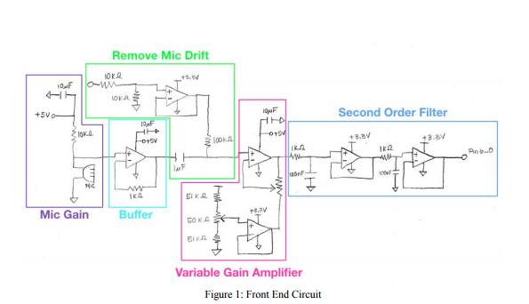
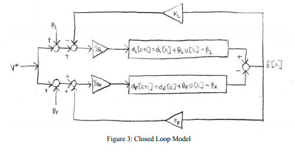
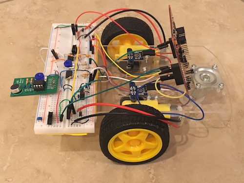
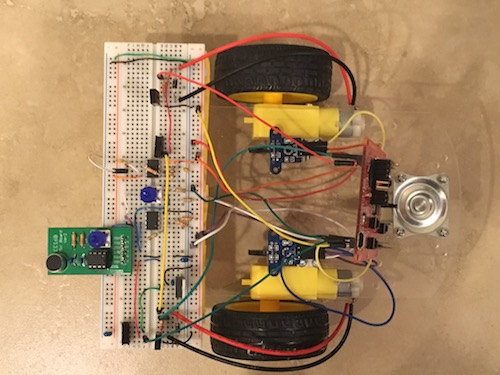
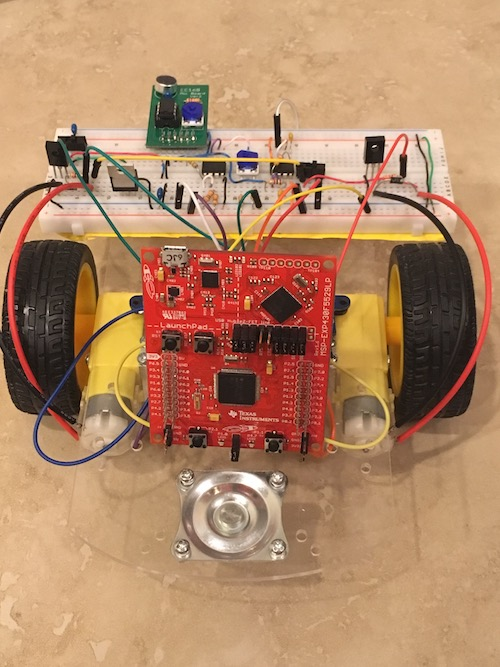

SIXT33N is a voice controlled robot car that implements a closed loop system and whose main components feature a multi-part circuit and a TI-MSP430 microcontroller unit.
The car uses an electret microphone that is responsible for taking in an input in the form of a sound wave, which behaves as a variable current source. We take that input and represent it as a voltage which we then put through a buffer in order to avoid it being distorted by other circuit components. Next, we remove the microphone drift and send the input through a non-inverting amplifier so that the signal is amplified. Lastly, the input goes through a second-order low-pass filter, so that the signal is tailored to what the MSP430 accepts.
The car responds to four words: monkey, fly, cat, and taco. Choosing words for such type of project became one of the most crucial parts. The number of syllables, the ending sounds, and the length of the words were something that had to be greatly considered when it came to correctly classifying them using the mathematical method of principal component analysis (PCA).
Full report available here.



